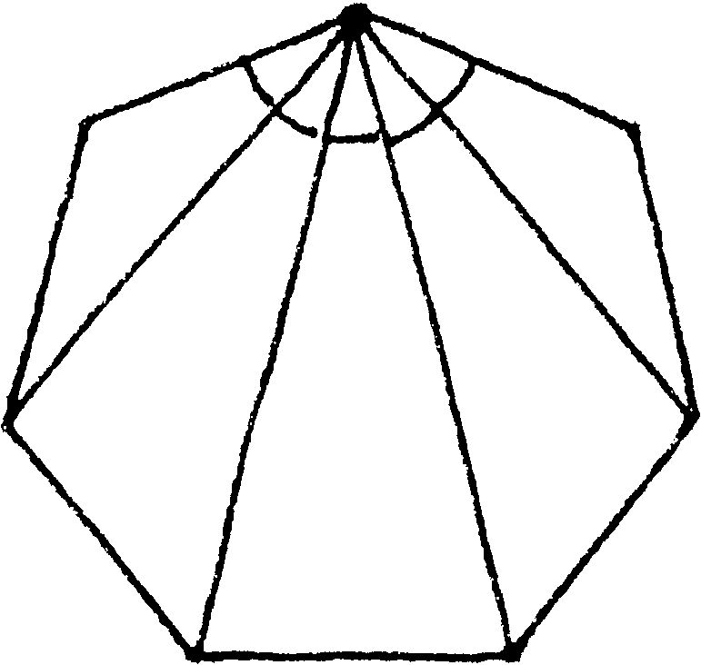
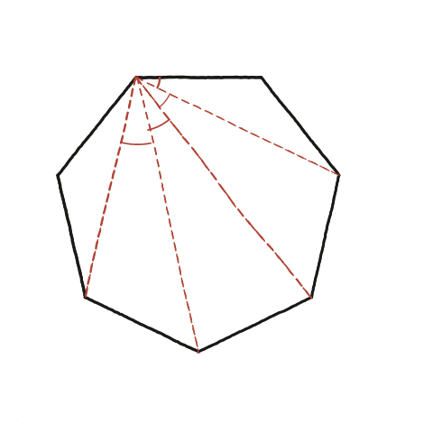

Les diagonals traçades des d'un vèrtex d'un polígon regular, sempre formen angles iguals?

Aquí no es compten diagonals, es miren angles
A l'exercici d'on surt la fórmula (n−2)×180°/n, l'interès era quants triangles sortien d'un ventall de diagonals. Aquí la pregunta és diferent: mirar la mida de cadascun dels angles que es formen al vèrtex entre diagonals (i costats) consecutius, i esbrinar quina relació hi ha entre ells.
Comptar bé els trossos, no només les diagonals
És fàcil confondre's aquí: en un heptàgon (7 costats), des d'un vèrtex en surten 4 diagonals cap als 4 vèrtexs no adjacents —tal com es veu a la imatge de l'enunciat, a dalt. Però aquestes 4 diagonals no parteixen l'angle del vèrtex en 4 trossos, sinó en 5: els dos costats del polígon que hi arriben al vèrtex també delimiten un tros cadascun (entre el costat i la diagonal veïna), a més dels 3 trossos entre diagonals consecutives. En total, 2 trossos d'extrem + 3 trossos interiors = 5.
Per què els cinc trossos són iguals
En un polígon regular inscrit en una circumferència, l'angle que es veu des d'un vèrtex entre dos vèrtexs consecutius —és a dir, un angle inscrit— depèn només de quants costats del polígon separen aquests dos vèrtexs, no de quins vèrtexs concrets siguin. Cadascun dels 5 trossos —tant els 2 d'extrem (costat–diagonal) com els 3 interiors (diagonal–diagonal)— separa sempre un vèrtex del següent immediat, mai en salta cap. Com que tots subtendeixen exactament el mateix arc de circumferència (un setè de la volta sencera), tots cinc angles inscrits són iguals.

Sí, tots els angles són iguals. Des d'un vèrtex d'un polígon regular de n costats surten n−1 segments cap als altres n−1 vèrtexs (2 costats i n−3 diagonals), i aquests n−1 segments parteixen l'angle del vèrtex en n−2 trossos iguals —en un heptàgon, 5 trossos, no 4 (el nombre de diagonals): cal comptar també els dos trossos d'extrem entre cada costat i la diagonal veïna. Tots són iguals perquè tots són angles inscrits que subtendeixen el mateix arc de circumferència.
Comprovació
Amb la fórmula de l'angle inscrit, cadascun dels cinc trossos val 180°/7≈25,71°. Els cinc junts han de reconstruir l'angle interior d'UN vèrtex de l'heptàgon: 5×180/7=900/7≈128,57°, exactament el que la fórmula (n−2)×180°/n prediu per a n=7. Compte amb un error fàcil: 900° és la suma dels SET angles interiors de l'heptàgon sencer —un ventall d'un sol vèrtex mai hi pot arribar, només pot completar el seu propi angle, que és set vegades més petit.